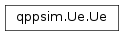

qppsim.Ue module¶
Documentation¶
Module with the UE model
-
class
qppsim.Ue.Ue(imsi, name, mcs, queue_size=10000)[source]¶ Bases:
objectClass that models a UE. A UE keeps track of the last BID and port used, and provides methods to request the next one available. It also has a fixed MCS (configured) at construction time, a dictionary with the applications running in the UE, and a reference to the default bearer.
A UE is defined by its name and IMSI.
The class is hashable and comparable.
-
add_app(app, default_bearer=False)[source]¶ Add an application to this UE. If ‘default_bearer’ is false, we need to request the activation of a dedicated bearer for this application, using the QoS parameters that the Priority Policy tells us. Otherwise, use the default bearer.
-
add_bearer(qci, gbr, mbr, pci, pvi, arp)[source]¶ Add a dedicated bearer to this UE. Called from the BearerList.
-
apps¶ Get the dictionary with the applications running in this UE
-
bearer_count¶ Get the number of active dedicated bearers in this UE
-
default_bearer¶ Get the default bearer
-
imsi¶ Get the IMSI
-
mcs¶ Get the MCS
-
name¶ Get the name
-
next_port¶ Get the next available port
-
queue_size¶ Get the RLC queue size (in Bytes)
-